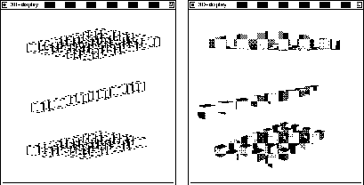
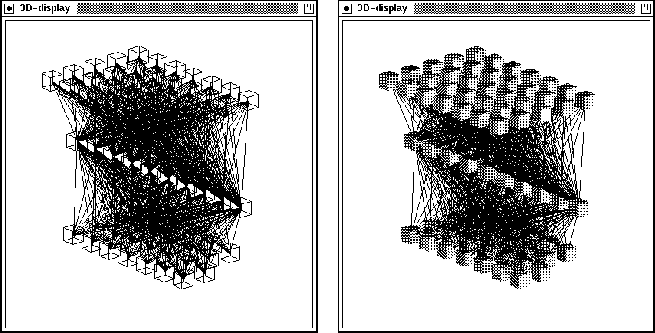
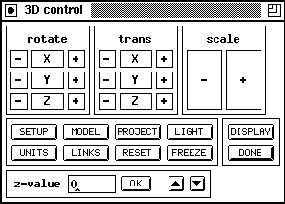

Next: Transformation Panels
Up: Use of the
Previous: Example Dialogue to

Figure: Control Panel
The 3D-control panel is used to control the display panel. It consists
of four sections (panel):
- the transformation panels
- rotate: rotates the 3D-display along the x-, y- or z-axis
- trans: transposes the 3D-display along the x-, y- or z-axis
- scale: scales the 3D-display
- the command panel with the buttons
-

: basic settings like rotation angles
are selected
-

: switch between solid model and
wireframe model
- : selects parallel or central projection
- : chooses lighting parameter
- : selects various unit display options
- : selects link display options
-
 : resets all 3D settings to their
original values
: resets all 3D settings to their
original values
- : freezes the 3D-display
- the panel with the buttons
- : opens the 3D-display (max. one)
-
 : closes the 3D-display window and the
3D-control window and exits the
3D visualization component
: closes the 3D-display window and the
3D-control window and exits the
3D visualization component
- the z-value panel: used for input of z-values either directly or
incrementally with the arrow buttons
Niels.Mache@informatik.uni-stuttgart.de
Tue Nov 28 10:30:44 MET 1995